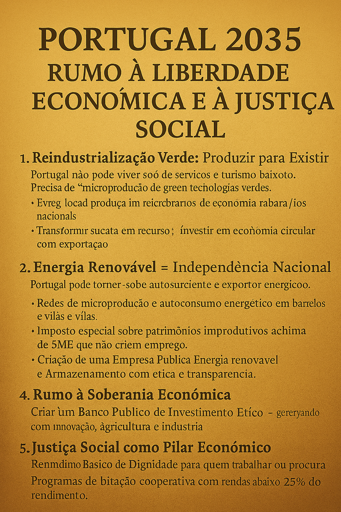

Portugal 2035 – Rumo à Liberdade Económica e à Justiça Social
Publicado em 2025-05-22 10:08:30

1. Reindustrialização Verde: Produzir para Existir
Portugal não pode viver só de serviços e turismo barato.
Precisa de indústria limpa, estratégica e nacional. Como?
- Criar polos industriais regionais cooperativos, ligados a universidades e autarquias.
- Produção local de tecnologias verdes: painéis solares, turbinas eólicas, baterias de sódio.
- Transformar sucata em recurso: investir em economia circular com apoio a PME recicladoras.
- Fomentar indústrias agroalimentares de qualidade com certificação nacional e exportação.
2. Energia Renovável = Independência Nacional
Portugal pode tornar-se autossuficiente e exportador de energia limpa.
- Redes de microprodução e autoconsumo energético em bairros e vilas.
- Comunidades energéticas descentralizadas geridas localmente (com lucros para os residentes).
- Criação de uma Empresa Pública de Energia Renovável e Armazenamento com ética e transparência.
- Impulso à mobilidade elétrica local e acessível — transportes públicos gratuitos movidos a energia limpa.
3. Reforma Fiscal Revolucionária
- Tributação severa de capitais fugidos e offshores: rastrear, penalizar, reverter.
- Imposto especial sobre patrimónios improdutivos acima de 5M€ que não criem emprego.
- Redução do IRS sobre trabalho honesto e aumentos reais no salário mínimo.
- Eliminação de isenções abusivas às grandes empresas estrangeiras.
4. Rumo à Soberania Económica
- Criar um Banco Público de Investimento Ético — gerido com transparência, focado em inovação, agricultura e indústria.
- Incentivos a cooperativas tecnológicas e incubadoras com controlo nacional.
- Redirecionar fundos europeus para projetos estruturantes, não consultoria inútil.
5. Justiça Social como Pilar Económico
- Rendimento Básico de Dignidade para quem trabalha ou procura trabalho.
- Programas de habitação cooperativa com rendas abaixo de 25% do rendimento.
- Redefinição da função pública: menos cargos de nomeação política, mais técnicos qualificados.
Esta reinvenção é difícil, mas não é impossível.
É preciso visão, coragem e cidadania ativa.
E sobretudo, é preciso derrubar os parasitas instalados — os que usam o Estado para extorquir o povo com impostos, enquanto escondem os seus milhões em cofres estrangeiros.
Artigo de Francisco Gonçalves in Fragmentos de Caos
Escrever no Vazio
Um desabafo sobre o silêncio que sufoca quem ousa pensar.
Uma reflexão sobre o ato de escrever num país que prefere calar.
Ler o artigo completo